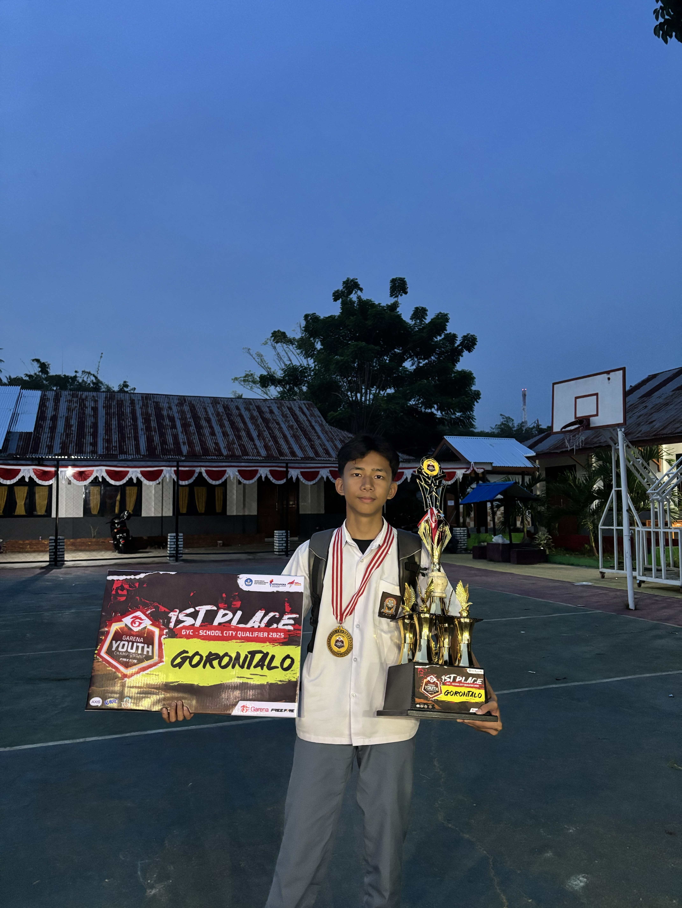

Pemain Kompetitif Free Fire
Halo, saya Moh Irfandi Panggi atau yang lebih dikenal dengan nama Grey dalam dunia kompetitif. saya terlahir di gorontalo tepatnya 23-07-2008. saya anak pertama dari 3 bersaudara Saya memiliki minat yang besar pada dunia teknologi, gaming, dan esports.
Dalam dunia kompetitif saya aktif bermain Free Fire dan Mobile Legends. Melalui dunia esports saya belajar tentang disiplin, kerja sama tim, pengembangan diri,dan tidak egois.
Perjalanan saya di dunia kompetitif memberikan banyak pengalaman yang berharga. Saya berhasil meraih Juara 2 pada turnamen GYC Tahun 2024 dan kemudian meningkatkan prestasi tersebut dengan meraih Juara 1 GYC Tahun 2025. Prestasi tersebut menjadi motivasi bagi saya untuk terus berkembang dan mencapai tujuan yang lebih tinggi.
Selain gaming, saya juga tertarik pada dunia website, komputer, pemrograman, dan teknologi modern. Saya senang mempelajari hal-hal baru, mengembangkan kemampuan diri, dan terus mengikuti perkembangan teknologi yang semakin maju dari waktu ke waktu.
Saya percaya bahwa kerja keras, konsistensi, dan kemauan belajar adalah kunci utama dalam meraih kesuksesan. Dengan semangat tersebut, saya ingin terus berkembang baik di bidang teknologi maupun dunia esports serta memberikan dampak positif bagi orang-orang di sekitar saya.
"I'm not the best, but I often beat the best."komunikasi, strategi, dan kepemimpinan. Bagi saya, setiap pertandingan bukan hanya tentang kemenangan, tetapi juga tentang proses belajar dan